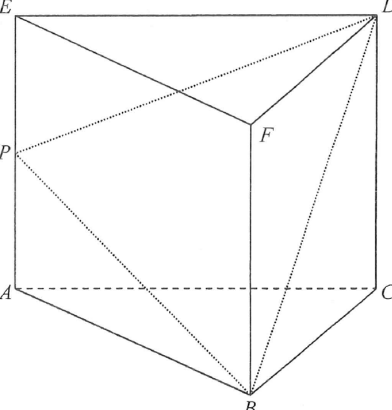

求積法 · 直立三角柱與希羅公式

$$BP=\sqrt{12^{2}+9^{2}}=\sqrt{225}=15\ \text{cm}$$
同理 $\angle DEP=90^{\circ}$，且 $DE=AB=12$、$EP=5$：
$$DP=\sqrt{12^{2}+5^{2}}=\sqrt{169}=13\ \text{cm}$$
$$s=\frac{2k+15+13}{2}=k+14$$
$$A=\sqrt{(k+14)(14-k)(k-1)(k+1)}=\sqrt{(196-k^{2})(k^{2}-1)}$$
答案 A。選項 C、D 的 $k^{2}+1$ 是誤把 $(k-1)$ 與 $(k+1)$ 當成 $k^{2}+1$。